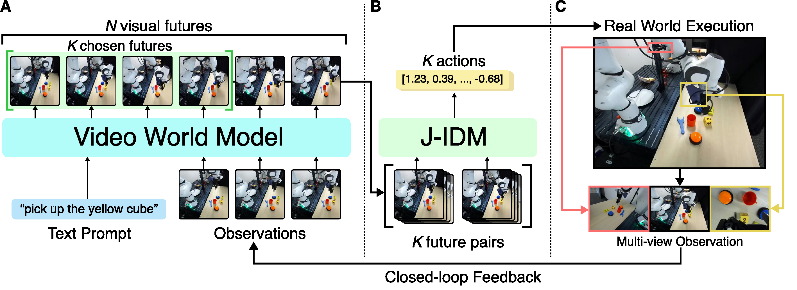
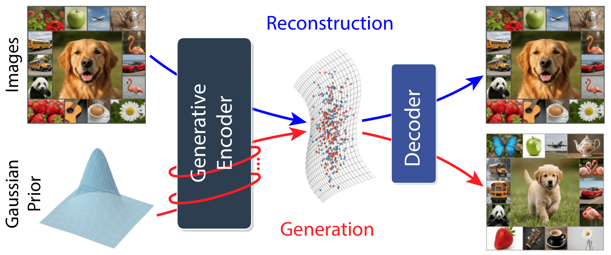
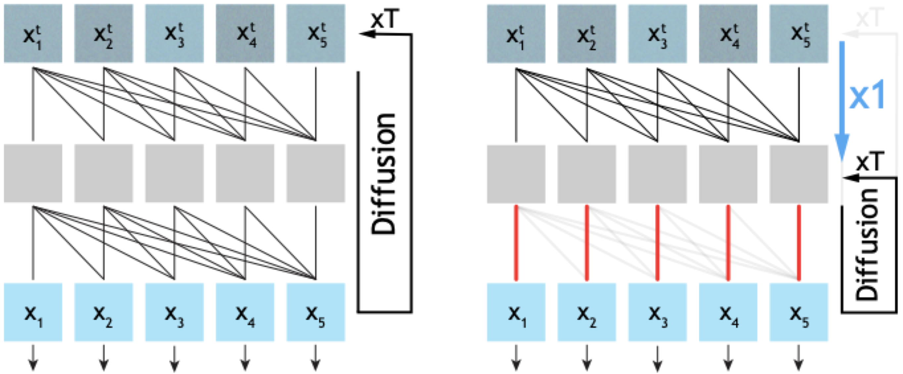
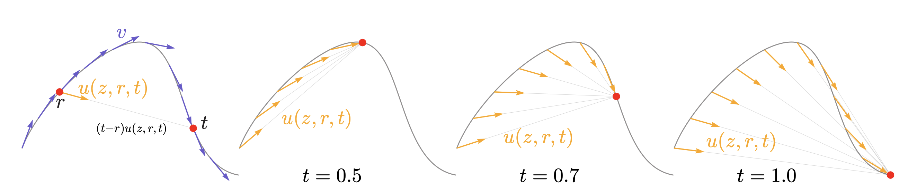
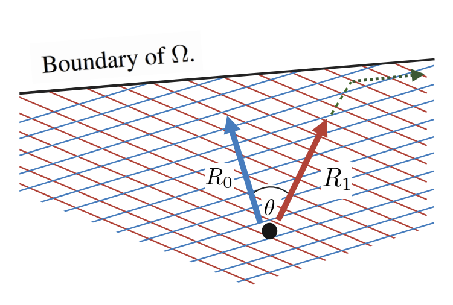
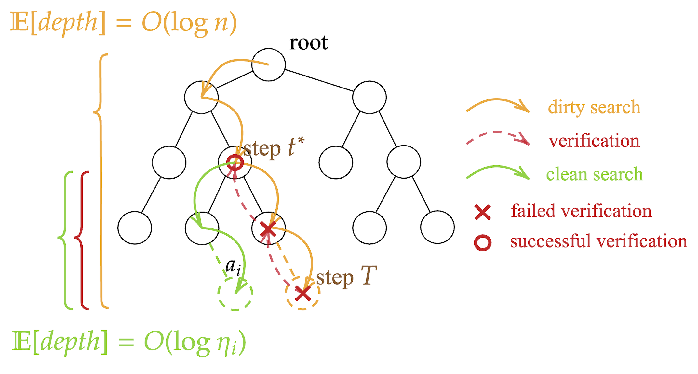
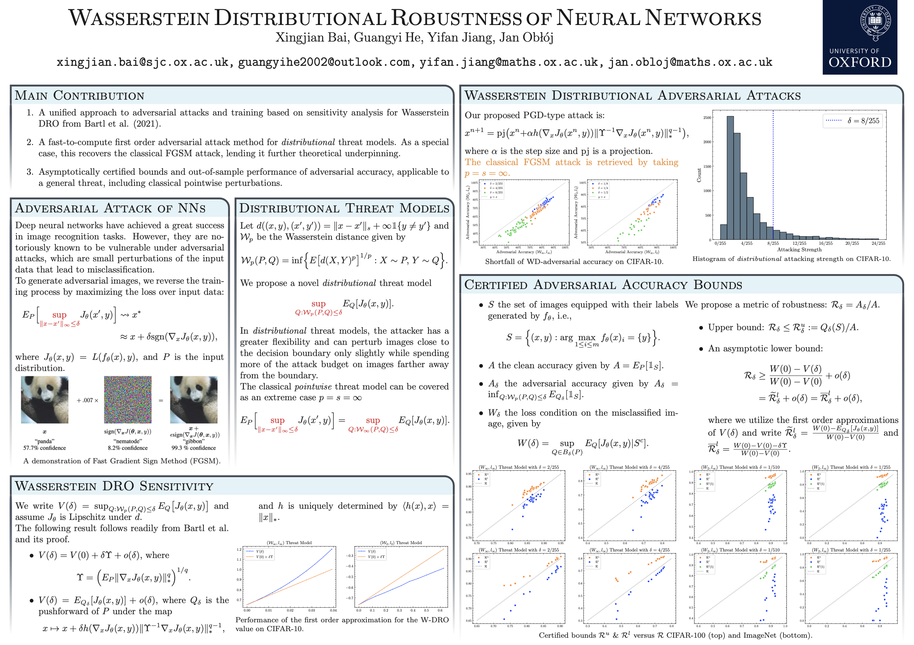

Xingjian Bai 白行健
New · Blog post · Oct 2026 Reactive Optimizers This deep learning optimizer responds to training signals by rewriting its update rules as training progresses. It can make fine-grained scheduling decisions, avoid loss spikes, and escape overfitting, outperforming static optimizers in many zero-shot settings. Read the post →Hello! I am a third-year Ph.D. student at MIT, where I have been fortunate to work with Professors Phillip Isola, Vincent Sitzmann, and Kaiming He. I received my master's and bachelor's degrees in Mathematics and Computer Science from the University of Oxford. My research focuses on understanding and empirically building stronger generative models — recently, flows, diffusion, and video world models. I have also explored theoretical computer science, with a focus on online algorithms and learning-augmented algorithms. More broadly, I am drawn to research that is both scientifically impactful and intellectually stimulating.
During my time at Oxford, I had the privilege of working with Prof. Jan Obloj, Prof. Christian Coester, Prof. Christian Rupprecht, and Luke Melas-Kyriazi. I also spent a rewarding summer at Stanford, collaborating with Prof. Jiajun Wu, Dr. Weiyu Liu, and Joy Hsu. Outside of my academic pursuits, I enjoy jogging and playing tennis.
News
- Oct 2026 We propose Reactive Optimizers, which let a coding agent track training dynamics and rewrite the optimizer’s update rules mid-run. Try OPAL, our open-source PyPI package, on your own architecture and task!
- Sep 2026 UNITE, a single-stage method for jointly training a visual tokenizer and generator from scratch, was accepted to NeurIPS 2026!
- May 2026 Check out VERA, our new paper on turning video models into generalist robot policies. The same video planner works with both a Franka arm and a dexterous robot hand.
- Mar 2026 Introducing UNITE! A shared encoder learns to tokenize images and denoise their latent representations, so the system can train in one stage without a pretrained tokenizer.
- Feb 2026 Causality in Video Diffusers is Separable from Denoising was accepted to CVPR 2026! We show how a video model can reason across frames in a single pass, then render the next frame with a lightweight denoiser.
- May 2025 Mean Flows learns average velocity to generate an image in a single network evaluation. It was later selected for an oral at NeurIPS 2025!
- Oct 2024 Unweighted Layered Graph Traversal was accepted to SODA 2025! Maximizing entropy gives an online algorithm whose competitive ratio grows only polylogarithmically with graph width.
- Jun 2024 My master’s thesis on making diffusion models smaller and faster with fixed-point layers won Oxford’s Departmental Prize for the Best Computer Science Project!
- Feb 2024 Fixed Point Diffusion Models was accepted to CVPR 2024! Reusing fixed-point solutions across denoising steps lets the model spend less compute on sampling.
Publications
* equal contribution-
-

-

-

-

-

-

-

-
